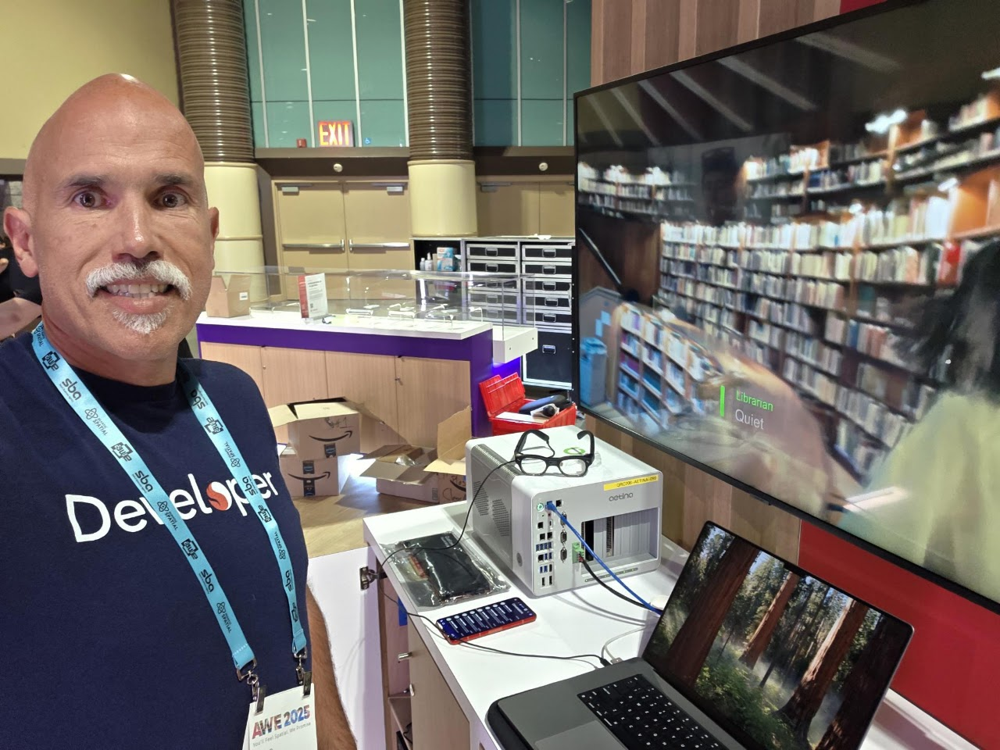
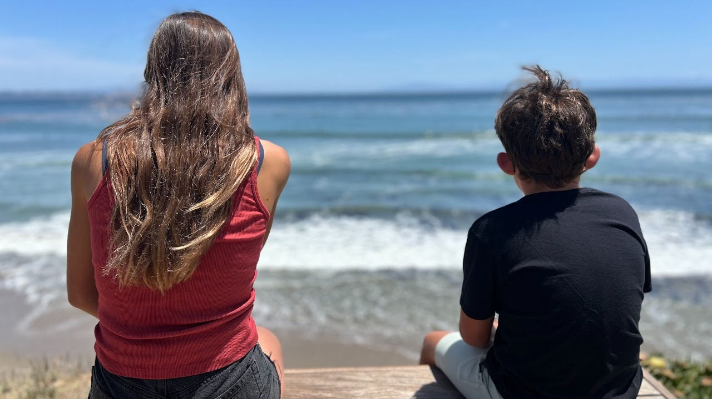
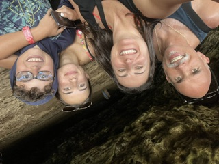

I love stepping beyond the familiar · Always learning
Roll‑Up‑My‑Sleeves
Product Leader
Bringing clarity to teams, momentum to ideas & value to the people who use them
∞
01 / Selected work
A few things
I've helped bring to life.
From first sketch to real-world release, I work where clear direction, thoughtful systems, and a little bit of magic meet.
02 / A little context
Versatile leader.
Built for complexity.
I lead where technology, business, and human needs converge—bringing strategic clarity to complex challenges and turning ambitious ideas into products people value. I partner with engineering, design, and go-to-market leaders to set direction, build conviction, and deliver with purpose.
Over 8+ years, I've taken initiatives from 0→1 through 1→N, aligning diverse teams around the decisions that matter and the outcomes that count. I operate as a player-coach: shaping product bets, leading critical programs, writing code, examining data, and removing whatever stands between a team and meaningful progress. I bring the range to move from the boardroom to the details, without losing sight of the bigger picture.
My perspective has been forged through technical leadership roles across Brazil, Canada, Sweden, India, China, and the United States.
Beyond technology and product, I love spending time with my family, walking our dog, Mel, and watching my kids compete in the sports they love. I'm also an FCC-licensed Amateur Radio operator, callsign KN6KQU, and a USSF-licensed soccer referee. I stay curious about emerging technologies, seek out unfamiliar perspectives, and keep a close eye on the details—including the pursuit of the perfect espresso.
Get in touch ↗product & tech
products shipped
mindset
03 / My journey
Professional & Personal
forces behind the work.

Beyond the Familiar
My professional story is shaped by a habit of making sense of complexity and turning it into forward motion. I do my best work in ambiguous environments, where clear priorities and operational discipline need to coexist, connecting an inspiring direction with a deliverable plan.
Over the years, I've led initiatives from first idea to scale, bringing engineering, design, go-to-market, and leadership together around a shared outcome. I focus on defining the real problem, building alignment, and making thoughtful decisions at pace. Whether setting direction, shaping systems, reading the data, or clearing a roadblock, I stay close to the work.
My technical range covers automotive, telecommunications, IP and broadband infrastructure, and mixed reality. Each field brings its own constraints, regulations, and market pressures. Moving between them has taught me to learn quickly, explain complex subjects clearly, and spot the useful intersections between technology and business.
Working across Brazil, Canada, Sweden, India, China, and the United States has given me a nuanced view of how people, markets, and ideas influence one another. It helps me turn business needs into an organised course of action, keep progress steady through uncertainty, and create environments where learning improves every decision.


Where It Started
Discipline, resilience, and a desire to do things well have been steady threads in my life. Competitive athletics taught me that high performance is deliberate: intensity matters, but so do precision, recovery, and knowing where effort counts.
That mindset led to unexpected opportunities: working with remarkable people across continents, forming lasting relationships, and earning recognition through consistent effort. The lessons have stayed with me: commitment compounds, a global outlook broadens the answer, and growth begins at the edge of what feels comfortable.
At university, I put those lessons into practice by leading initiatives for the School of Engineering Athletics. Managing stakeholders, coordinating teams, and keeping a complex organisation moving showed me how much can be achieved through trust and shared ownership. That insight became central to how I lead.
Today, my family is my clearest teacher. Being a father to two growing kids has reshaped my sense of purpose, perseverance, and what meaningful contribution looks like. They remind me to stay curious, keep learning, and lead by example. Balancing ambitious work with an engaged life at home has sharpened my priorities, my trade-offs, and my ability to build connections that last.
04 / Start a conversation